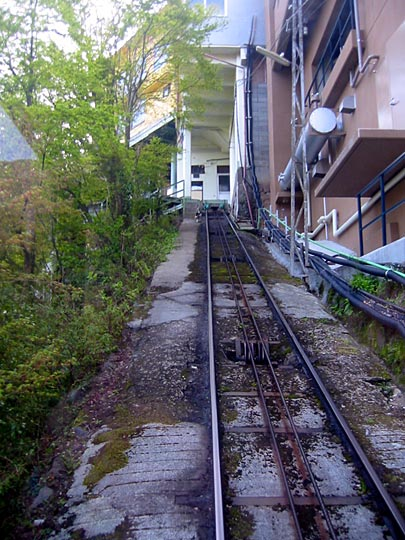
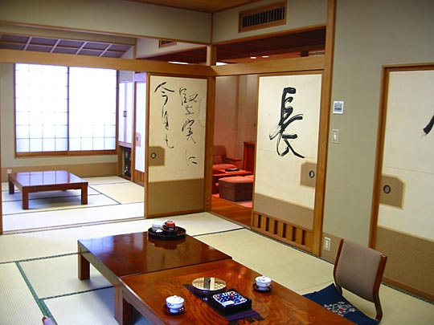
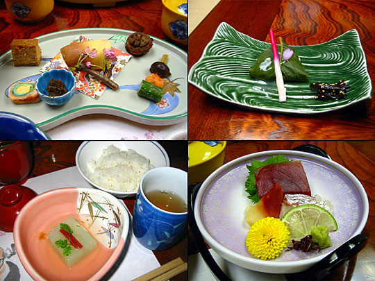

Photos from our second trip to Japan, 18 March–2 April 2005 are on Flickr
Japan, 18-28 April 2003
- Index
- Arrival, Day 1: Tsukiji Fish Market; Hama-Rikyu Gardens [1.66Mb]
- Day 1 (continued): DesignFesta [1.25Mb]
- Day 2: Meiji Shrine and inner garden; Harajuku; Nezu Institute; Aoyama cemetery [2.38Mb]
- Day 3: Ghibli Museum, Mitaka; Shinjuku [1.66Mb]
- Day 4: Hakone: Taisekan ryokan [1.81Mb]
- Day 5: Hakone: Taisekan; Hakone Museum of Art; ropeway to Owakudani; Lake Ashino-ko [1.93Mb]
- Day 6: Kamakura [4.37Mb]
- Day 7: Senso-ji temple; Asakusa; Joe [1.46Mb]
- Day 8: Koishikawa Korakuen garden; Seibu department store; Ginza [1.2Mb]
- Day 9: Shinjuku-gyoen gardens [2Mb]
- Day 9 (continued): Harajuku, Ueno Park and the Tokyo National Museum, Roppongi Hills [1.59Mb]
Tuesday 22 April: Hakone: Taisekan ryokan
Documenting today a bit back-to-front, as that's how I wrote it in my diary, starting with our stay in the Taisekan ryokan the afternoon:
Under luxurious eiderdowns surrounded by calligraphy screens. Smooth wood beams, flawless carpentry, tatami mats... the only sound's the roaring river outside. If it were light, and we were to slide open the screens over the window, a forested slope rises sheerly outside up to the sky. Maples and pines with calligraphic shapes frame the picture. We're in Taisekan ryokan, in Miyanoshita (the 'i' is silent), near Hakone. The hotel's like a mini-citadel nestled among trees at the bottom of a gorge, only accessible via its own private funicular railway. We bathed in the natural hot springs, sitting on pleasantly rough rocks in clean hot water that comes up to your chin. Had the onsen (bath) to myself most of the time (Kelly had to share the much smaller separate ladies' onsen with an old lady and a couple of cuties.) Afterwards, sipped iced barley tea (with the now-familiar coffee/cigarette-butt taste) in the anteroom looking out over the river and garden. Wished I could fix the memory in my mind, or just fully take it in (is it even me, I couldn't help but wonder.)
Getting to Taisekan
Arriving at Hakone-Yamote station
Just a building at the station
Travelling by switchback train — the Hakone Tozan Rail Line — for several stations. The route's so steep, the train reverses direction at almost every station, proceeding upwards in zig-zags. The driver's ears were transparent pink in the bright sunshine.
Looking out of the train's window

From Miyanoshita station, find the Taisekan building. It looks drab, but it's just a terminal for the hotel's private funicular. Descend steeply. (This is looking backwards to the terminal building.)
The hotel like a citadel at the bottom of the gorge
Our rooms
Our rooms, shortly after arrival. Entrance hall's in the middle at the back. Kelly's sipping ocha (green tea) at the low table reading the hotel manual for foreign guests. The marquetry box is a specialist local craft (that turned out to be too expensive when we were buying souvenirs.)

From the second room, looking towards the living room
Fresh ikebana flower arrangement and watercolour painting
View through the living room window. If you look closely, you can see the little hiking path leading up the cliff.
Our private bath (not the communal hotsprings). It's made out of solid, smooth, fine-grained wood, and it's large and deep enough to immerse yourself completely up to your chin. Like all Japanese baths, you don't wash in it. You wash outside it, rinse off, and then soak in the bath until you attain the desired "boiled octopus" state.
How to put on a yukata (perhaps)
The food was like a vision — at least 2 dozen bowls with several things in each. And we polished them all. Starting with an apricot liquer aperitif, then a whole little firefly squid. Best for me were the two fish soups — one a clear consommé with a cherry blossom floating in it, the other a hot broth (comes in a pot with a little flame burning beneath it) with shrimp, oyster, little enoki mushrooms and greens. And a long pink-and-white pickled ginger shoot. Lots of different kinds of fu — sponge-like bread in fanciful shapes and colours. Desert was this lovely delicate green tea mousse with a red bean on top, sugared cherry on the stalk and a spearmint leaf.
Marred by two slight mishaps — Kelly turning over a pot of soysauce on her lap, and me pulling a ligament in my foot trying to sit cross-legged properly. Will have to see if I can walk tomorrow! [Update: while I limped all that evening, it was fine the next day.]
Our kaiseki meal
[spellings as provided]
- Aperitif
- Japanese apricot wine
- Sakizuke (Appetizer)
- Wasabi-Toufu (Compound with Toufu, Japanese house radish and others)
- Kuchigawari (Palate-refreshing foods)
- Fu (Daitokugi style), see [sea] eel, sushi with bamboo sprout and others
- Owan (Clear broth)
- Singyo (cherry blossom style), Fu (Sou-nai type), others
- Sashimi
- tuna, sea beam [bream], Hokki-gai (shellfish), others
- Yakimono (grilled food)
- sea bream (grilled with Japanese apricot)
- Azumono (Hot food)
- Yose-nabe (Japanese chowder):
Chinese cabbage, Enoki mushroom, prawn, garland chrysanthemum, dumpling of chicken meat, cuttlefish, oyster, whitish strings of Konnyaku, scallop, others
- Nimono (Boiled dish)
- bamboo sprout, shrimp, butterbur scape, Fu (cherry style), Toufu (Kouya type) and others
- Sunomono (Vinegared dish)
- Japanese parsley, shrimp, Hotate (shellfish), firefly squid, asparagus and others
- Shizakaru
- Grilled eel
- Wan (soup)
- red Miso, Fu, Japanese parsley, others
- Kounomono (Pickles)
- Dessert
The maid comes in without warning, pulling a stacked trolley. You hang around awkwardly and peruse the menu while she sets the table, then she bows and leaves. (And comes back half-way through the meal to bring more stuff.)

Little flames burning underneath the Japanese chowder

Clockwise from top left: Kuchigawari (Palate-refreshing foods); Yakimono (grilled food) — note the long ginger shoot; Sashimi; Sakizuke (Appetizer), also rice and tea

Clockwise from top left: Sunomono (Vinegared dish) — note the firefly squid; Kounomono (Pickles); Owan (Clear broth) — with a cherry blossom floating in it; Yose-nabe (Japanese chowder)

Clockwise from top left: clear soup with little mushrooms with a tang of pine needles (this one's from next morning's breakfast actually); Grilled eel; Dessert; Nimono (Boiled dish)
This morning, before travelling to Hakone
Backtracking a bit, how we got from Tokyo to Hakone:
This morning we tramped around Shibuya a bit. Nice experience breakfasting at Starbucks one floor above the busy intersection (I guess only they can afford such a bit of plum real estate) in blazing sunshine, writing postcards. Also success with finding a place — Sakuraya — to put all our photos (over 350 so far) onto CD (it works a bit like an ATM.)
At Tower Records I learnt how to check for English subtitles or soundtracks on DVDs. Useful. But confirming that none of the DVDs I want have them! Such is the enthusiasm for animation in Japan, that you can buy beautiful collections of classic world animation, including Russian, Scandinavian, Czech, Korean and Chinese. Also compilations of all the World Masterpiece Theatre TV productions (Pinocchio, Maya, etc.), organised by time period. Also a whole shelf of experimental animation and video art. Currently on promotion is the complete Norman McClaren animation collection. (In English as well, so I could've got it, but it was amazingly expensive.)
Got bento lunch in the Shinjuku Odakyu depato for the train ride to Hakone. Fun experience. Beautiful mundane-yet-strange Japanese landscape. Slightly familiar to me from the many contemporary Japanese films I've seen over the last 10 years. A bit similar to the experience of being in Europe the first time?
Walking via Love Hotel Hill towards Shibuya station. Every single one of them is different, and totally wacky
Another one. Pity the hilarious writing outside this one isn't legible in our photo.
Vending machine and vice cards (all slightly less lurid and with higher production values than London's)
Steaming dim-sum joint in Shibuya
Watching the crowds at Hachiko Square from Starbucks while writing postcards
The "Romance Train", with which we travelled to Hakone. Bit of a mystery why it's called that. I think it's because Hakone is popular as a honeymoon destination. The trip takes about 90 minutes.
Before you get on the train, you witness the eerie sight of all the seats automatically swivelling around to face the direction of travel.

Bento lunch

Shiso yaki gyoza
bento

Dessert: Green tea rice paste wrapped around a yellow plum
Japanese countryside
Next: Day 5: Taisekan, Hakone Museum of Art, ropeway over Hell's Valley, Lake Ashino-ko